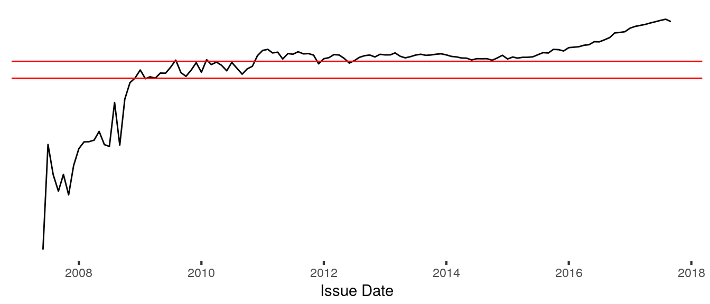

Chapter 9 Pricing Loans
9.1 Naive Model
9.1.1 Using the Present Value of Expected Cash Flow
9.1.2 Calculate Number of Payments Made
[1] 0 0 0 0 0 0[1] "Fully Paid" "Fully Paid" "Charged Off" "Fully Paid" "Fully Paid"
[6] "Charged Off"9.1.3 Present Value of Expected Payments
9.1.4 Risk Weighted Assets Approach (RWA)
Use Basel defined methods for measuring capital for risk management.
9.1.4.1 Simple Approach
Assets are weighted by risk ratios given by regulators. Multiply the principal amount by the given risk ratio. Since there are no regulators defining risk ratios at the loan level, we’ll need to translate this macro economic approach to our micro-economic note environment. Risk ratings can be determined simply by calculating default percentages by grade or other factor.

The proportion of performing loans, or non-defaulting loans, increases quickly in Lending Club’s early years until it starts to stabilize with notes issued in 2009. From 2009-2011 the rate levels off but with a lot of variance - it oscillates between 75% and 82%. Then, in 2011 the loan performance rate makes a marked improvement to 87% and generally stays above the previous maximum of 82%. As of writing, loans issued in 2015 or later have not yet fully matured. Additional defaults may occur during that time which would decrease the average default rate. This should be expected in loans issued less than 3 years ago as additional notes will default with time.
To apply the simple method, we would value the current note using the expected default rate. This works at the loan or portfolio basis because we’re assuming all loans have the same default risk rate.
In application in valuing note currently in your portfolio, we’d multiply the principle by 87% and use that at the loan value. In a purchasing decision, we’d multiply the expected returns from the loan by 87% and evaluate whether we want the invest the purchase price in the offer- either $25 intial offering or the folio market price.
9.1.4.2 Advanced Method
Renton, Peter. 2011. “How Lending Club and Prosper Set Interest Rates.” Blog. Lend Academy. http://www.lendacademy.com/how-lending-club-and-prosper-set-interest-rates/.